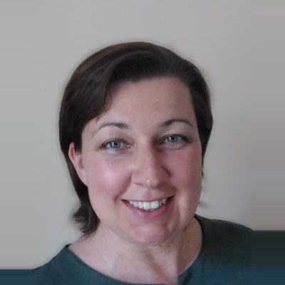

The V-Dem Regional Centre for Australia and New Zealand is planned to be run jointly by the Australian National University and the University of Melbourne. It will bring comparative democracy research, data and public debate to our region.
Directors and Project Managers
Constanza Sanhueza PetrarcaDirector and Project Manager, V-Dem Regional Centre Australia and New Zealand Senior Lecturer, Australian National University

Seraphine F. MaerzDirector and Project Manager, V-Dem Regional Centre Australia and New Zealand Senior Lecturer, University of Melbourne
First event
Democratic resilience in the Age of AI
Wednesday 9 December 2026, 4:00 to 5:30 pm, followed by a reception
Old Arts Hall, Old Arts Building, University of Melbourne. A public panel, and the first in a series of events on the way to the regional centre.
Join the conversation on:
How is AI changing the way citizens form political opinions?
What information circulates in our public sphere, and who shapes it?
How can institutions be held accountable when AI is involved?
Where does AI strengthen participation, and where does it enable manipulation, exclusion and power concentration?
How can we measure democratic resilience and keep track of the effects of AI over time?
Panel: Steven Wilson (tbc), Carl-Henrik Knutsen (tbc), Andrea Carson (tbc) and Bec Strating (tbc). Chairs: Constanza Sanhueza Petrarca and Seraphine F. Maerz.
Registration link on Eventbrite to follow
What we plan to do in 2027
We are creating an international network of researchers working on democracy. In 2027 we plan to organise:
Conference panelsBringing democracy research and debate to conferences in our region and beyond.
A workshopIn person at the Australian National University, with online participation. Date to be confirmed
Policy briefsShort, clear evidence for policymakers, journalists and civil society.
A newsletterNews, events and new data from V-Dem Australia and New Zealand.
Maintaining a LinkedIn pageTo keep everyone connected.
We maintain our mailing list manually and respect your privacy.
What is V-Dem
Varieties of Democracy (V-Dem) is the largest global dataset on democracy and autocracy. It is led by the V-Dem Institute at the University of Gothenburg, Sweden. V-Dem is an international team effort of country experts, researchers and project managers.